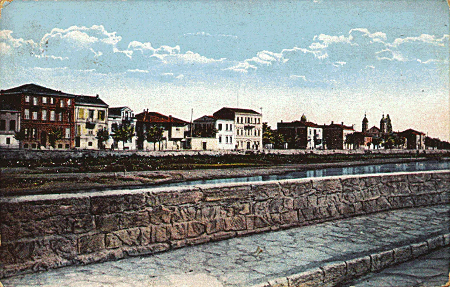
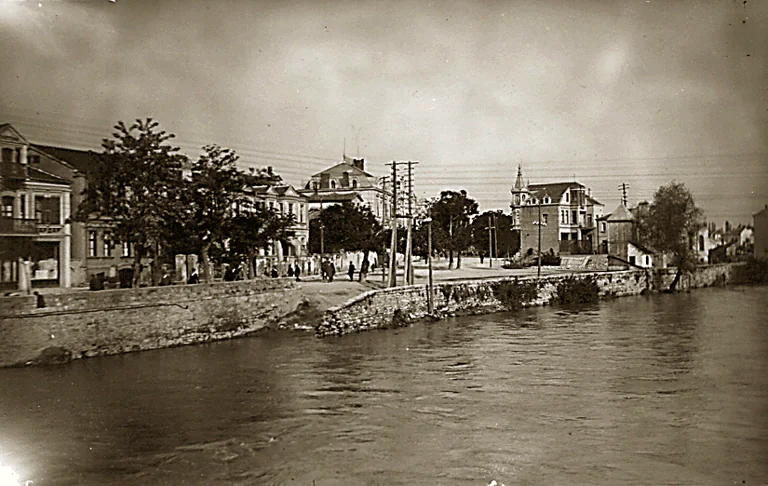
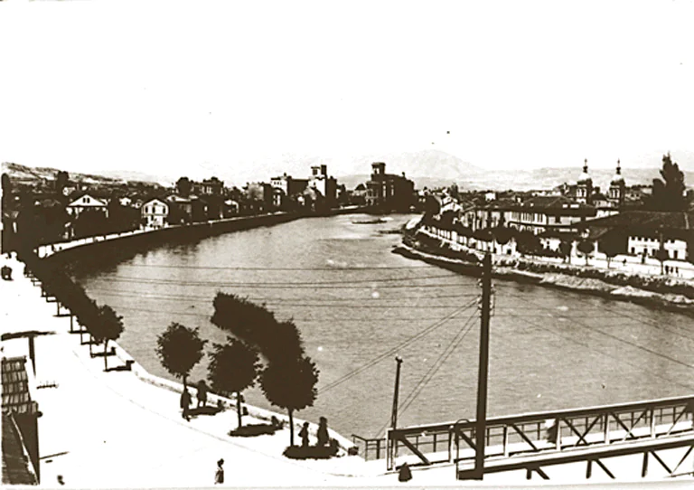

Sur le Vardar
- Scénario
- Dimitrie Osmanli, Simon Drakul
- Caméra
- Kiro Bilbilovski
- Année
- 1964
- Durée
- 00:16

Le quai « 13 Novembre » - 1888.

Un moulin sur le cours supérieur du Vardar - fin du XIXe siècle.

Bien que très abîmée, cette carte postale a été intégrée à la collection car elle date de la fin du XIXe et du début du XXe siècle, et l'on y voit des bâtiments qui n'apparaissent sur aucune autre. À droite, la Banque ottomane. Au premier plan, le vieux platane auquel fut pendu le corps de Karpoš en 1689. Au-dessus se dresse la forteresse de Skopje - Kale. Tout à gauche, une partie du pont de pierre.

Vue des deux quais du Vardar - début du XXe siècle.

Skopje en 1902 - vue du pont de pierre vers le pont de bois. Le Vardar a déjà des murs de quai. On distingue des maisons et des bâtiments publics. À droite sur la photo, le théâtre turc ; à gauche, tout au début, la mosquée Burmali. À l'arrière-plan, la banque et l'ancienne poste.

Vue vers la passerelle en bois, l'ancien théâtre turc et une partie de la forteresse de Skopje - Kale. (début du XXe siècle)

Vue depuis la rive droite du Vardar vers la forteresse de Skopje - Kale. (début du XXe siècle).

Vue de la rive gauche du Vardar (quai « Dimitar Vlahov ») - début du XXe siècle. Dans le mur du quai, on voit l'embouchure de la Serava.

Le pont de bois, avant la construction du pont de fer. À l'arrière-plan, le pont de pierre et la mosquée Burmali. (fin du XIXe siècle)

Début du XXe siècle. La Banque ottomane, la métropole de Skopje et les bâtiments de la rive gauche du Vardar, juste après le pont de pierre. Au premier plan, le vieux platane.

Vue de la rive gauche du Vardar vers l'église Saint-Mina (à deux coupoles) et l'église de la Sainte-Vierge (à l'arrière-plan, à une coupole). - début du XXe siècle.

Au premier plan, le palais de justice et l'ancienne école ; à l'arrière-plan, les coupoles de l'église Saint-Mina - début du XXe siècle.

Vue des deux quais du Vardar - début du XXe siècle.

La rive gauche du Vardar - le quai « Dimitar Vlahov » avec la Banque ottomane, la métropole et les deux coupoles de l'église Saint-Mina à l'arrière-plan. (début du XXe siècle)

La rive gauche du Vardar - le quai « Dimitar Vlahov », entre le pont de pierre et le pont de fer, avec des immeubles. (début du XXe siècle)

La photo a été prise depuis le pont de pierre, vers 1910. À gauche, l'ancien théâtre turc et, au-dessus, la forteresse de Skopje - Kale.

La rive gauche du Vardar avec le quartier juif et, à l'arrière-plan, la forteresse de Skopje - Kale. (1910)

La photo a été prise depuis le pont de pierre, vers 1910. À gauche, l'ancien théâtre turc et, au-dessus, la forteresse de Skopje - Kale.

Skopje lors de l'inondation de 1916. L'eau atteint les bâtiments. À droite, on voit qu'une partie d'un bâtiment s'est effondrée à cause de la crue.

Skopje après 1918. Les deux quais du Vardar, axes longitudinaux importants pour le développement de la ville. À l'arrière-plan, le pont de pierre et la mosquée Burmali. On voit une construction active sur le quai, aux formes architecturales variées, proches de l'école européenne.

Skopje avant la guerre balkanique. Le quai de la rive droite du Vardar. À l'arrière-plan, la mosquée Burmali et le pont de pierre. Au premier plan, le consulat de Russie et d'autres bâtiments. L'architecture est influencée par l'école européenne, avec des éléments classiques, académiques et pseudo-classiques.

Vue de la rive droite du Vardar avec les bâtiments de la banque et de l'ancienne poste, entre le pont de pierre et la passerelle en bois - début des années 1920.

Vue vers la rive gauche du Vardar. Au premier plan, le palais de justice et l'ancienne école ; à l'arrière-plan, les coupoles de l'église Saint-Mina et, à sa droite, l'église de la Sainte-Vierge. - années 1920.

Vue de la rive droite du Vardar avec les bâtiments de la banque et de l'ancienne poste, entre le pont de pierre et la passerelle en bois - début des années 1920.

La rive droite du Vardar devant le pont de pierre. À gauche, la banque et l'ancienne poste. À droite sur la carte postale, la passerelle en bois - vers 1920.

Vue de la rive droite du Vardar avec les bâtiments de la banque et de l'ancienne poste, entre le pont de pierre et la passerelle en bois - début des années 1920.

Une partie de la rive gauche du Vardar - à peu près l'emplacement de l'actuel immeuble de la Radio-Télévision macédonienne. On voit le minaret de la mosquée Vardar Tekke (construite au début du XVIe siècle) - début des années 1920.

Une partie de la rive gauche du Vardar - à peu près l'emplacement de l'actuel immeuble de la Radio-Télévision macédonienne. On voit le minaret de la mosquée Vardar Tekke (construite au début du XVIe siècle) - début des années 1920.

Vue de la rive droite du Vardar devant le pont de pierre. L'espace central du quai. À gauche, les bâtiments de la banque et de l'ancienne poste. À droite sur la carte, la passerelle en bois - vers 1920.

Skopje - une partie de la place. À gauche, une partie du pont de pierre ; à droite, le terrain avant la construction de la Banque nationale. Le quai est aménagé en rue. À l'arrière-plan à droite, le lycée de garçons.

Skopje - une partie de la place. À gauche, une partie du pont de pierre ; à droite, le terrain avant la construction de la Banque nationale. Le quai est aménagé en rue. À l'arrière-plan à droite, le lycée de garçons. - années 1930

Le quai « Dimitar Vlahov » - rive gauche du Vardar. - début des années 1920

Vue depuis le pont de pierre vers le monument aux combattants tombés et la Banque ottomane. - années 1920.

Vue panoramique de Skopje, plus précisément du quai gauche du Vardar avec une partie du quartier juif, le quartier Pajko et le pont de pierre. - années 1920

Vue de Skopje depuis le Cercle des officiers vers le quartier juif. - années 1920.

Vue de la rive droite du Vardar avec des immeubles. À l'arrière-plan, le pont de pierre et le chantier du Cercle des officiers. (vers 1925)

Skopje, années 1930. Vue des deux quais. Au premier plan, l'ancienne école et le palais de justice, et juste derrière, les deux clochers de l'église Saint-Mina. À l'arrière-plan, le Cercle des officiers, avant la construction de la Banque nationale. Photo prise depuis le pont de fer.

Le quai de la rive droite du Vardar devant le pont de pierre. Au premier plan, un immeuble avec des boutiques au rez-de-chaussée et les entrées du passage « Aroesti », construit dans les années 1920, petit centre commercial d'artisans et de marchands. (Lors du séisme de 1963, beaucoup de gens périrent à cet endroit.) À l'arrière-plan, la Banque agricole, le Cercle des officiers, la Banque nationale et le pont de pierre. (années 1930)

Le quai « 13 Novembre » avec des immeubles, une partie du pont de pierre et le Cercle des officiers - années 1920.

Vue vers le quai « 13 Novembre » sur la rive droite du Vardar, le pont de pierre et le Cercle des officiers - photographié vers 1927.

Une partie de la place devant le pont de pierre et les deux rives du Vardar. À gauche à l'arrière-plan, l'église Saint-Mina avec ses deux coupoles et, un peu plus à gauche, l'église de la Sainte-Vierge. Le quai est aménagé, avec éclairage électrique et verdure. (1925-1930)

La rive droite du Vardar, de la passerelle en bois vers le parc - années 1930.

Le quai « 13 Novembre ». Vue vers le pont de pierre et le Cercle des officiers - fin des années 1930.

Le quai de la rive gauche du Vardar devant le pont de pierre, avec des maisons du quartier juif. À l'arrière-plan, la Banque ottomane - vers 1930.

Vue depuis le pont de pierre sur le Vardar vers la passerelle en bois et les deux rives. À droite, le Théâtre national ; à gauche, la banque et l'ancienne poste. - années 1930

Vue du quartier « Bunjakovec ». Le lit du Vardar est protégé par des digues en terre. - années 1930

Les rives gauche et droite du Vardar. Photographiées depuis le pont de pierre. L'espace central des quais des deux côtés du Vardar. - vers 1930

La rive droite du Vardar. Quai « 13 Novembre ». - vers 1930

Skopje, années 1930. Vue des deux quais depuis le pont de fer sur le Vardar, bordés d'immeubles d'habitation et publics. Au premier plan à droite, l'ancienne école, le palais de justice et les deux clochers de l'église Saint-Mina. À l'arrière-plan, le Cercle des officiers et la Banque nationale.

Vue vers le quai « 13 Novembre » sur la rive droite du Vardar, le pont de pierre et le Cercle des officiers - photographié vers 1930.

Vue des deux quais du Vardar et du pont de fer. - années 1950

Vue des deux quais du Vardar et du pont en béton. - années 1950.

La rive droite du Vardar après le pont de pierre, photographiée avant le terrible séisme du 26 juillet 1963. À l'arrière-plan, le Cercle des officiers et la Banque nationale.

Le quai de la rive droite du Vardar. L'ensemble de bureaux et de logements dit « Tours du Vardar » (architecte Aleksandar Serafimovski). La photo date des années 1960, avant le terrible séisme du 26 juillet 1963.

La rive droite du Vardar avec le pont de pierre, les tours au bord du Vardar et le Grand Hôtel « Skopje », photographiée juste après le terrible séisme du 26 juillet 1963 et avant l'aménagement du Vardar, réalisé entre 1965 et 1968.

Vue vers la rive droite du Vardar. L'arche au premier plan fait partie du pont de pierre ; photo des années 1950.

Vue depuis la rive gauche du Vardar vers le pont de pierre. À l'arrière-plan, les Tours du Vardar. - années 1970

Vue de l'actuelle poste centrale - le Centre de télécommunications (construit en 1974-1980, architecte Janko Konstantinov) - et du quai devant elle.

 Aqueduc4 cartes postales
Aqueduc4 cartes postales Kale30 cartes postales
Kale30 cartes postales Ponts60 cartes postales
Ponts60 cartes postales Quai58 cartes postales
Quai58 cartes postales Place46 cartes postales
Place46 cartes postales Édifices66 cartes postales
Édifices66 cartes postales Églises chrétiennes19 cartes postales
Églises chrétiennes19 cartes postales Édifices musulmans33 cartes postales
Édifices musulmans33 cartes postales Cercle des officiers29 cartes postales
Cercle des officiers29 cartes postales Théâtre28 cartes postales
Théâtre28 cartes postales Gare ferroviaire13 cartes postales
Gare ferroviaire13 cartes postales Écoles36 cartes postales
Écoles36 cartes postales Parcs12 cartes postales
Parcs12 cartes postales Marchés18 cartes postales
Marchés18 cartes postales Rues38 cartes postales
Rues38 cartes postales Panorama I60 cartes postales
Panorama I60 cartes postales Panorama II30 cartes postales
Panorama II30 cartes postales Collages55 cartes postales
Collages55 cartes postales Inondations9 cartes postales
Inondations9 cartes postales Séisme27 cartes postales
Séisme27 cartes postales Skopje 200026 cartes postales
Skopje 200026 cartes postales